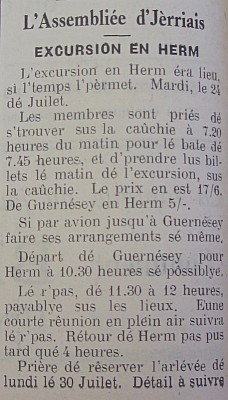

Excursion Annuelle
 Pour l'excursion annuelle, les membres dé l'assembliée avaient chouaisi Mardi, lé 24 juilet, pour faire un viage en Hèrme. A caûse du temps, i'y eut un fliotchet d'monde tchi n'y fûtent pas. Enfin, i' s'en trouvit eune quarantaine dé vaillants, sus la caûchie pour prendre lé baté à 8 heures pour d'Guèrnésey.
Lé trajét s'fit dans la biâse et n'ou n'vit rein jusqu'au moment dé l'arrivée dans la caûchie dé St. Pierre-Port. Un mio douteux n'ou r'prins l'baté pour Hèrme et dans vingt minutes no's v'là à dêbèrtchi au p'tit port dé l'île. Comme par miraclye, lé temps s'dêboudit et lé biau solé s'montrit, comme pour nos faite la beinv'nue.
Rêunion Mensuelle
Après une tâssee d'thée, et viyant qué j'avions l'temps j'nos assiévîmes sus l'herbe dans un clios et ch'fut là que j'eûmes not' rêunion. Lé Président saisit l'occasion pour faire la beinv'nue à Mme. Haynes et Mme. Oakes, deux dames v'nant dé Vancouver, et qui s'intérêssent hardi dans les fonctions dé notre Assembliée.
Actuellement Mme. Haynes est sus l'comité exécutif dé la Société des Jèrriais à Vancouver.
Etout, la beinv'nue fut offèrte dé la part dé touos les membres, au Cap'taine Rodney Perchard, dé Montreal, un jèrriais ervénu pour vaie ses gens, et, en partitchulyi, la famille Billot, dé St. Martin.
Nouvieaux membres
Les nouvieaux membres êlus sont:- Mme. Eunice Haynes; Lé Cap'taine Rodney Perchard; Mme. Dorothy Godeaux; Mrs. H.B. Le Maistre; Mme. A. Pallot et Mlle. Agnes Pallot; Lé Sieur A. Drelaud et Mme. Drelaud; et Mme. K. Jéhan.
Lé R'pas
A douze heures, n'ou s'trouvit dans l'café "Mermaid" à côté, pour lé r'pas qu'avait 't bein préparé et organisé, avec un menu, au chouaix pour tous.
Touos les membres en profitent, et comme résultat, i' no's asseûrent qui' sont prêts à èrcommander les bouans homards dé Hèrme!
Prom'nade
Ensuite n'ou' s'prom'nit dans la direction du Nord dé l'île, en travèrsant la grande commune. Ch'est là qu'n'ou respire l'air pur, chèrgi d'parfums dé bruyère et d'flieurs saûvages, et qué n'ou trouve la trantchillité, et la biauté.
N'ou d'vallit jusqu'à la grève, et les pus jeunes ramassîtent eune mâsse d'êcalles. Ensuite n'ou fît eune visite à la Chapelle du Manyi, et n'ou's prom'nit dans l's alentours dé la fèrme dévant s'ertrouver à quatre heures, à la montée d'la Rosière, ouaiqu' les batchaux sont amarés en attendant les pâssagers pour d'Guèrnésy.
Lé temps pâssit bein trop vite, et quand i' fallut s'dire "A la préchaine," n'ou's avait grand r'gret dé s'entr' tchitter; et d'penser qué not' belle journée 'tait déjà finie. enfin, i' faut dire qué ch'est eune excursion charmante tchi vaut la peine d'erprendre, et tchi vos laisse dé belles mémouaires pour adouochi les jours à v'ner.
1956
Viyiz étout: